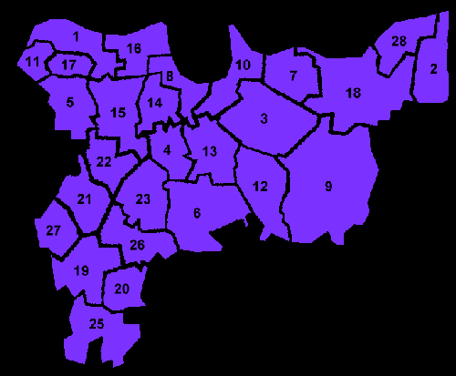
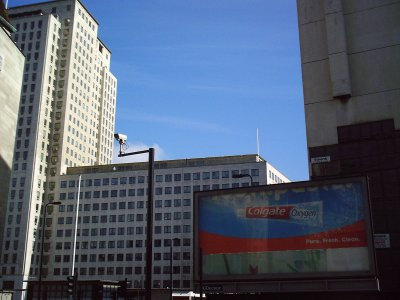
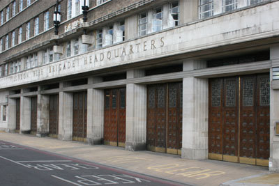
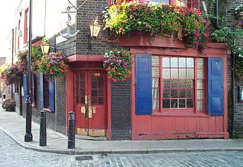
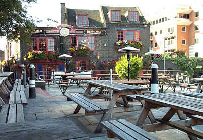
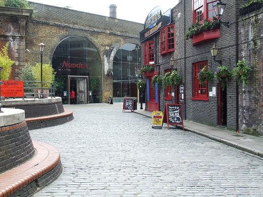
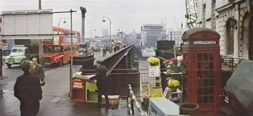
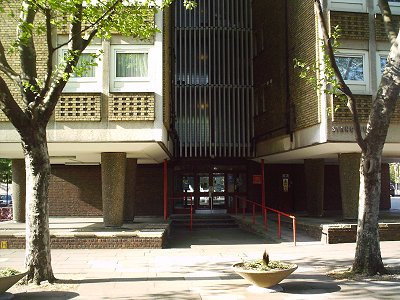
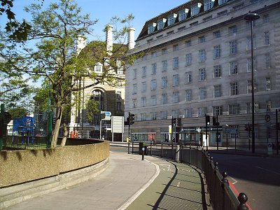

Addington Street

STRANGE REPORT:
Report 1553: Racist: 'A most
dangerous proposal' (Peter Duffell: August 1968)
Rick (Ram John Holder) is chased onto the ruins of
a demolished house
(the location overlooked the Addington Street entrance to
Waterloo
Station, now redeveloped) and beaten by thugs. Jill Crowley (Jane
Merrow) and Margaret (Cleo Sylvester) do
the best they can for Rick
after they find him.
(Identified by Wyn Roberts, April 2005)
Albert Embankment
THE AVENGERS: Six Hands Across a Table
(Richmond Harding: March 1963)
Establishing shot of Hampton House, as the offices of the Reniston
Group shipbuilders.
(Identified by Tavistock, May 2010)

GIDEON’S WAY: The Firebug (Roy
Baker:
September 1964)
Fire brigade called out (fire engines leave London Fire
Brigade
Headquarters).
(Identified by Alan Field, August 2007)
GIDEON’S WAY: The Millionaire's Daughter
(Cyril Frankel, ??)
Alan Blake (Don Borisenko) and Nina Henderson (Lans
Traverse) look
across the Thames at Big Ben and The Houses of Parliament from the
Embankment footpath.
(Spotted by Jaz Wiseman, July 2005)
STRANGE REPORT:
Report 0649 SKELETON: 'Let Sleeping
Heroes Lie' (Peter Medak: August/September 1968)
Contractors clearing an old bomb site (for new St Thomas
Hospital
buildings) discover a skeleton and a gun in amongst the
rubble.
RANDALL AND HOPKIRK
[DECEASED]: Just For
the Record (Jeremy Summers: ??)
Establishing shot of the Palace of Westminster.
THE ADVENTURER:
The Not-So-Merry Widow
(Cyril Frankel: ??)
Gene Bradley (Gene Barry) meets Mr Parminter (Barry
Morse) to discuss
Lady Diane Battersley.
(Spotted by Jaz Wiseman, November 2001)
THE NEW AVENGERS: Sleeper (Graeme
Clifford:
September 1976)
Purdey’s view of the other side of the river (The Decca building, 9 Albert Embankment, is the only one still standing).
(Spotted by Alan Hayes, April 2026)
Anchor Public House, Bankside


MAN IN A SUITCASE:
Man from the Dead (Pat
Jackson: August 1966)
Rachel walks beside the river and comes to an outdoor, rooftop area
(demolished) run by The Anchor public house. She
then enters a pub as
McGill (Richard Bradford) deals with the man who
was following her. He
then chases down a corridor/tunnel (under the railway bridge)
after a
mysterious figure that could be Harry Tyson. McGill makes his way to
the pub to talk with Rachel.
(Spotted by Alan Leventhall, September 1994)

STRANGE REPORT:
Report 3424 Epidemic: 'A most
curious crime' (Daniel Petrie: October/November
1968)
Captain Tork (Graham Haberfield) thinks he sees
Hamlyn Gynt on the
corner of the street and grabs him.
(Identified by Stephen Carter, June 2007)
Film:
MISSION IMPOSSIBLE(1996)
Bankside
THE PROTECTORS:
Blockbuster (Jeremy
Summers: 1973)
Security Van drives along Bankside, and enters Saunders Chemical Works
(redeveloped site possibly The Globe theatre). After
the robbery the
Security van and a Land Rover with the villains aboard leave the scene
of the crime.
Bermondsey Wall
GIDEON'S WAY: The Tin God (Directed
by John
Gilling: June 1964)
John ‘Benny’ Benson (Derren Nesbitt), Syd Benson (Michael
Cashman) and
Freddy Tisdale (John Hurt) are on the roof of the
warehouse and watch
as police cars begin arriving.
(Identified by Stepen Carter, September 2007)
Chicheley Street
THE ADVENTURER:
The Case of the Poisoned Pawn
(Cyril Frankel 1972)
Mr Parminter (Barry Morse) and a Police
Superintendent (Paul
Williamson) watch from an unmarked police car as Brian
Hamilton (Stuart
Wilson) enters the bank (Lloyds Bank on York Road).
(Identified by Jaz Wiseman, March 2006)
Finck Street
STRANGE REPORT:
Report 1553: Racist: 'A most
dangerous proposal' (Peter Duffell: August 1968)
Glynn Crowley (Guy Doleman) is addressing a
gathering of the Pure
British League in London. He retinue includes his political manager,
Drake (Karl Held). Tom Brant (Clive
Francis) soaks up ever one of
Crowley’s words in the crowd. Later Rick (Ram John Holder)
is chased
down the same street by thugs. (The location has been
redeveloped.)
(Identified by Wyn Roberts, April 2005)
Greenham Close
HAMMER HOUSE OF HORROR:
Rude Awakening (Peter
Sasdy: 1980)
Norman Shenley (Denholm
Elliot) and Lolly (Lucy Gutteridge)
go to visit a block of
flats as part of their estate agency duties, Campbell Building C Block,
but they have visited the wrong block and it is being demolished (the
flats have been demolished in reality).
H.M.S. Belfast
RETURN OF THE SAINT:
Yesterday's Hero (Roy
Ward Baker: 1978)
Roy Gates (Ian Hendry) and Michael (Matthew
Ryar) talk on the deck
before Gates leaves in a Landrover.
(Spotted by Sam Mitchell)
Lambeth Palace Road
H. G. WELLS' INVISIBLE MAN:
Shadow On The Screen
(Pennington Richards: 1958)
Dee drives towards Lambeth Road past the Palace of Westminster.
(Spotted by Sam Mitchell, September 2000)
Lambeth Pier
RANDALL AND HOPKIRK
[DECEASED]: The
Trouble With Women (Cyril Frankel: Autumn 1968)
It's early in the morning and Jeff has had a successful night at Alan
Corder's gambling club (establishing shot of morning by the
River
Thames).
(Spotted by Stephen Carter, March 2002)
RANDALL AND HOPKIRK
[DECEASED]: Never
trust a Ghost (Leslie Norman: December 1968)
Marty is wandering the streets of London alone at night (establishing
shot of Albert Embankment near Lambeth Pier).
(Spotted by Stephen Carter, August 2000)
Lambeth Palace Road
H. G. WELLS' INVISIBLE MAN:
Shadow On The Screen
(Pennington Richards: 1958)
Dee drives towards Lambeth Road past the Palace of Westminster.
(Spotted by Sam Mitchell, September 2000)
MAN IN A SUITCASE:
The Bridge (Pat
Jackson: ??)
McGill races in his Hillman towards the Albert Bridge.
RANDALL AND HOPKIRK
[DECEASED]: But What a
Sweet Little Room (Roy Ward Baker: June 1968)
Jeff (Mike Pratt) drops of Jeannie (Annette
André) at Arthur de Crecy's
apartment. Whist he is waiting Jeff is kidnapped by Elliot (Norman
Bird) and Rawlings (Raymond Young) who
drive off with him in their van.
RANDALL AND HOPKIRK
[DECEASED]: Money to
Burn (Ray Austin: January 1969)
After the discovery that the used bank notes had been switched a police
car races out of Battersea Power Station and out into the night (along
Lambeth Palace Road).
Leake Street
THE ADVENTURER:
The Case of the Poisoned Pawn
(Cyril Frankel 1972)
Mr Parminter (Barry Morse) and a Police
Superintendent (Paul
Williamson) stop and arrest Brian Hamilton (Stuart
Wilson) on the
corner of Leake Street and York Road.
(Identified by Jaz Wiseman, March 2006)
London Bridge

MAN IN A SUITCASE:
Variation On A Million Bucks - part 2
(Robert Tronson: November 1966)
Bert makes a telephone call instructing all his agents on ships to
Lisbon to kill McGill.
(Identified by Stephen Carter)
Riley Road
GIDEON'S WAY: Subway to Revenge (Roy
Baker: January 1965)
John Stewart notices that police cars are searching the area..
(Spotted by Geoff Dodd, February 2024)
Riverside Walk
THE PROTECTORS:
Wheels (David
Tomblin:
1973)
Under south bank of Hungerford Bridge Harry Rule (Robert
Vaughan) and
the Contessa (Nyree Dawn Porter) meet with Sneider (George
Pravda) and
he explains why the documents must be photographed rather than stolen.
(Spotted by Paul Stroud, April 2009)
The Royal Festival Hall
THE SAINT: The Crime Of The Century (John
Gilling: January 1965)
Establishing shot of the hall at night.
(Spotted by Sam Mitchell)
Royal Street
THE ADVENTURER:
Somebody Doesn't Like Me
(Cyril Frankel: 1972)
Gene Bradley (Gene Barry) and Krista Magnus (Penelope
Horner) go to
Johnny Morgan's (Jim Norton) flat (Canterbury
House) for more
information about the contract on Bradley's life. While Bradley
discovers that Morgan has been murdered, Krista sees the murderers,
Roberts (Peter Vaughn) and Buckley (Robin
Hawdon), escape via the front
entrance of the apartment block.
(Spotted by Jaz Wiseman, November 2001)
Saint Thomas' Hospital, Westminster Bridge Road
THE HUMAN JUNGLE:
Success Machine (Sidney
A Hayers, Jan/Feb 64)
Tim Gotha (Edward Judd) joins his foreman Blackie (Harold
Goldblatt) on
the construction site to discuss work practices. Blackie voices an
opinion that the union will object to a larger crew because of safety
factors of high-rise working. Having implemented the new work
practices, Gotha pays Blackie another visit on the partially built
building the next day, where the foreman voices his concerns. Seeing
the shop steward Red (Jack Smethurst), Gotha walks
over to him, but the
union representative appears to have no problem with the larger crew
causing working conditions to become more dangerous. The following day
an Ambulance arrives at the site, where one of the workers has been
struck by a rivet that has fallen from the construction above. A crowd
of workmen, Gotha, Blackie and Red, all watch as the two Ambulance men
put the injured man into their vehicle and then drive away. Having been
informed that the workman died of his injuries, Gotha later goes back
to the top of the construction intending to call the crew down, but
Blackie arrives to reveal that the death was an accident not connected
to the increased manning levels. Even so, Gotha quits his job as site
manager and heads down to ground level.
(Spotted by Mike Richardson: March 2011)
THE AVENGERS: The Danger Makers (Charles
Crichton: November 1965)
Gordon Lamble, head of the Chemical Warfare Establishment, climbs out
of the hospital window, stands on the ledge and looks at the view (East
Wing, St. Thomas’ Hospital under construction).
(Identified by Geodd Dodd, October 2013)
Shad Thames
THE SENTIMENTAL AGENT:
Title Sequence
Carlos Varell (Carlos Thompson) drives his Aston
Martin
over the bridge crossing (southbound) on his way to
The office of
Mercury International (by Butler’s Wharf).
(Spotted by Jaz Wiseman, February 2011)
THE SENTIMENTAL AGENT:
All That Jazz (Charles
Friend, 1962)
A delivery boy (Wilfred Downing) rides his bike
along Shad Thames
before turning into the wharf that is home to the Mercury International
offices (by Butler’s Wharf).
(Spotted by Jaz Wiseman, February 2011)
THE SENTIMENTAL AGENT:
Meet My Son, Henry
(John Paddy Carstairs, 1962)
Miss Susie Carter (Clemence Bettany) arrives back
in a taxi at the
offices of Mercury International
(Spotted by Jaz Wiseman, March 2011)
Southbank Centre
JOURNEY TO THE UNKNOWN:
Stranger In The Family
(Peter Duffell: 1968)
After visiting an exhibition on space travel, Boy (Anthony
Corlan)
accidentally bumps into Paula Wilde (Janice Rule)
who is being
photographed by her agent Sonny (Maurice Kaufmann).
Charles Wilson is
engrossed until he notices he is being followed by one of Dr Evans’
men, Hall. Charles tries to escape Hall, but ands up confronting him on
the stairs to Waterloo Bridge (Royal Festival Hall, Hayward
Gallery and
Queen Elizabeth Hall).
Upper Marsh


STRANGE REPORT:
Report 1553: Racist: 'A most
dangerous proposal' (Peter Duffell: August 1968)
The headquarters of the Pure British League (Stangate House)
where Adam
Strange (Anthony Quayle) arrives to see Jill
Crowley (Jane Merrow),
Rick (Ram John Holder), Margaret (Cleo
Sylvester) and others protesting
against the League. Later Strange breaks into the building as Hamlyn
Gynt (Kaz Garas) distracts the guard (Michael
Goldie). Later still
Glynn Crowley (Guy Doleman) and Drake (Karl
Held). are arrested and
takes away by the police.
(Identified by Wyn Roberts, April 2005)
Waterloo Railway Station
THE SAINT: The Miracle Tea Party (Roger
Moore 1965)
Simon Templar (Roger Moore) walks up and down the
main entrance steps.
An aerial shot of the station precedes the arrival of Geraldine McLeod
(Nanette Newman) by train She is followed from the
train by Franklin
(Edward Jewesbury) who is stopped by Barlow (Michael
Standing) at the
ticket gate. After talking to Geraidine, Franklin slips a packet of tea
into her bag. Both cross to the phones where Barlow kills Franklin. He
reports to Atkins (Robert Brown) and both tail
Templar and Geraldine
when they leave the stationmaster's office. Templar and Geraldine leave
the station in The Saint's Volvo, followed by Atkins and Barlow in a
Jaguar. A few days later The Saint, in his Volvo, arrives at the
station to meet the train with Dr. Osbert (Patrick Westwood)
aboard he
follows Dr. Osbert as he leaves the station in a taxi.
(Spotted by Jaz Wiseman)
THE BARON: You Can't Win Them All (Don
Chaffey: March 1966)
Cordelia is sent to Waterloo Station to wait for The Baron who is
hoping to get the Petrograd Icons from a left luggage locker. She is
followed to the station by Seftan Folkard who sends one of his thugs
after her. He returns to Folkard, who sends his girlfriend to inject
Cordelia with a sedative and steals her clothes. Disguised as Cordelia,
she waits by the locker, for The Baron to arrive.
(Spotted by Jaz Wiseman)
DEPARTMENT S: A Small War of Nerves (Leslie
Norman 1968)
Sir Curtis and Doctor Stickney are picked up in a Rolls Royce from
Waterloo Station. Later Scientist Greg Halliday (Anthony
Hopkins)
arrives on a train after escaping from Jason King (Peter
Wyngarde) and
Stewart Sullivan (Joel Fabiani) and walks through
the entrance of
platform 13
(Spotted by Jaz Wiseman)
York Road
THE ADVENTURER:
The Case of the Poisoned Pawn
(Cyril Frankel 1972)
Brian Hamilton (Stuart Wilson) arrives at the bank (Lloyds
Bank) to
collect the money he owes Gene Bradley (Gene Barry).
(Identified by Jaz Wiseman, March 2006)
Bermondsey Wall West
GIDEON’S WAY: The White Rat (Roy
Baker,
August 1964)
Establishing shot of London warehouses where a robbery is just about to
take place.
Surrey Docks (redeveloped as Surrey Quays shopping centre)
GIDEON’S WAY: The White Rat (Roy
Baker,
August 1964)
Mickey Keston waits on a cargo ship at the docks for the boat to sail.
GIDEON’S WAY: Big Fish, Little Fish (Cyril
Frankel: October 1964)
Establishing shot of docks as Police car ZB4 arrives at the Stone
Warehouse looking for “Happy”.
GIDEON’S WAY: How to Retire Without Really Working
(George Pollock: November/December 1964)
The Greshams find their way to meet their contact in Docklands.
Back to: